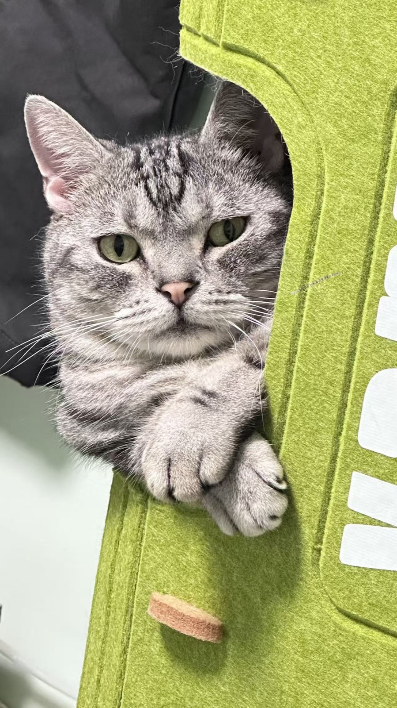

嗅觉：约 2 亿个受体
鼻腔内约有 2 亿个嗅觉受体，灵敏度约为人类的 14 倍。猫主要靠气味识别领地、同伴与食物，新物品到家先「闻后看」。
猫暴力，公猫，4 岁。性格调皮好动，精力旺盛。

今年 4 岁，性格调皮好动。日常爱好是占领纸箱、戴牵引绳出门遛弯， 偶尔蹲在笔记本电脑后面看屏幕，拍照时也比较配合。
共 8 张日常记录，点击照片查看大图。
按主题整理的科普条目，帮你更准确地理解身边这只猫。
鼻腔内约有 2 亿个嗅觉受体，灵敏度约为人类的 14 倍。猫主要靠气味识别领地、同伴与食物，新物品到家先「闻后看」。
视网膜后方有一层反光膜（tapetum lucidum），可二次利用微光，强光下猫眼发光正源于此；视野宽广，但完全黑暗中猫同样看不清。
人类约有 9000 个味蕾，猫只有约 470 个，且因基因突变无法感知甜味；它们对氨基酸（鲜味）和苦味则相当敏感。
正常体温 38.0–39.2℃；静息心率约 120–180 次/分；安静时呼吸约 20–30 次/分。居家观察呼吸频率，是判断状态的重要参考。
胡须根部密布神经末梢，能感知气流与空间距离，帮助判断狭窄通道能否通过。不要修剪猫的胡须。
和人类指纹一样，每只猫的鼻部纹路都不相同，可以作为识别个体的特征。
猫是 obligate carnivore：无法自行合成足量牛磺酸，必须从动物组织中摄取。长期缺乏会导致视网膜变性失明与扩张型心肌病（DCM）——不能长期用狗粮或素食替代猫粮。
猫的祖先源自干旱地区，渴感较迟钝。每日摄水量约为每公斤体重 40–60ml，湿粮是重要的补水来源；饮水不足与下泌尿道疾病密切相关。
洋葱大蒜（可致溶血性贫血）、巧克力、葡萄、酒精对猫有毒；百合属植物剧毒，误食少量即可引发急性肾衰竭，养猫家庭不建议养百合。
绝育后代谢下降，干粮自由采食容易过量。肥胖是糖尿病和关节问题的重要诱因——定时定量、湿粮搭配、每天玩耍消耗，比任何「减肥粮」都有效。
猫对食物变化敏感，突然换粮常引发软便或拒食。新旧粮按比例用 7 天左右逐步过渡，肠胃敏感的猫可以延长到两周。
幼猫哺乳时会用前爪交替按压促进乳汁分泌，成年后在感到安全放松时仍会出现这个动作。
磨爪同时完成旧指甲鞘脱落、标记气味和伸展身体三件事。提供猫抓板，可以有效减少对家具的抓挠。
源于隐藏自身气味、避免被天敌发现的天性。在猫感到绝对安全的环境里，也可能埋得没那么认真。
通常出现在放松舒适的状态，也可能用于自我安抚；主要由喉部肌肉快速振动产生。
成年猫每天通常睡 12–16 小时，幼猫和老年猫更久。多数时间处于浅睡状态，随时能醒来。
锁骨退化、肩胛骨靠肌肉连接，身体极其柔软灵活，能挤过头部可以通过的缝隙。
不少猫有明确的惯用爪偏好。可以观察它伸爪够零食时先出哪一只。
理毛不仅是清洁，也能调节体温、缓解紧张。过度舔毛甚至舔秃，则可能是压力信号。
家猫大约从数千年前开始随人类农业聚落生活，与狗相比驯化程度更低，也因此保留了更多独立天性。
猫主要用身体说话。点击卡片查看常见信号的含义。
猫咪生长速度与人类不同。输入它的年龄，看看大致对应人类的哪个阶段。
换算为近似值：第 1 年约相当于人类 15 岁，第 2 年约 24 岁，此后每年约增加 4 岁。
不同品种的性格与打理成本差异不小，按需求筛选看看。
体格结实，性格随和，对环境适应力强。
圆脸敦实，温和安静，独立不粘人。
聪明健康，适应力强，狸花、橘猫、三花、奶牛都很常见。
性格温顺，对人依恋较强，长毛需要定期梳理。
精力旺盛，叫声频繁，对主人互动需求很高。
体型大而性格温和，对运动量和活动空间要求较高。
安静优雅，扁脸需要每日清洁眼周，长毛需梳理。
几乎无毛，怕冷怕晒，皮肤需要定期擦拭护理。
这些疾病都无法在家自诊自治——定期体检（血检、尿检、超声）是发现它们唯一可靠的途径。以下内容仅作认识参考。
认识高龄猫最常见的疾病之一，资料估计 10 岁以上猫约三分之一受影响；早期几乎没有症状。
信号多饮多尿、体重缓慢下降、食欲波动。
应对7 岁后每年体检（血检＋尿检），确诊后按国际 IRIS 标准分期管理，配合处方饮食。
认识猫最常见的心脏病，缅因猫、布偶猫等品种有遗传倾向，早期可能毫无表现。
信号呼吸急促、精神变差；急性血栓栓塞时可突发后肢瘫痪。
应对定期听诊，有疑似表现时做心脏超声（BNP 血检可辅助）。
认识泛指膀胱与尿道疾病，包括自发性膀胱炎（FIC）、结石和感染；公猫尿道细，梗阻风险更高。
信号频繁进出猫砂盆、排尿嚎叫、血尿。
应对增加饮水与湿粮比例；一旦尿闭（完全尿不出）属于急症，立即就医。
认识与肥胖、年龄相关，公猫略高发；多见于中老年猫。
信号多饮多尿、食欲正常但体重持续下降。
应对确诊需血糖与尿检；核心是控制体重、规范饮食，部分猫经治疗可缓解。
认识口腔慢性炎症，疼痛剧烈，病因复杂（免疫异常、杯状病毒等）。
信号流口水、口臭、进食困难甚至对碗哈气。
应对由兽医评估分级；重度病例可能需要拔除病灶牙齿来解除疼痛。
认识传染性腹膜炎（FIP）由猫肠道冠状病毒突变引发，多猫环境风险更高，曾是致命疾病，近年已有抗病毒治疗手段；FIV（猫艾滋）与 FeLV（猫白血病）主要经咬伤传播。
信号FIP：波动发热、食欲不振、腹围增大或消瘦。
应对新猫入户先做 FIV/FeLV 检测；FIP 疑似症状务必尽早确诊，治疗窗口很关键。
本版块内容参考维基百科条目整理： 猫 · 猫粮 · 牛磺酸 · 猫传染性腹膜炎。 科普不构成诊断依据，猫咪健康状况请以兽医检查为准。
流浪猫的出现大多与遗弃和未绝育繁殖有关。了解问题，才能用科学的方式改善它们的处境。
桥洞、车底、绿化带都可能栖身；食物靠翻找垃圾，一碗干净的水并不容易得到。
没有免疫与驱虫保护，皮肤病、寄生虫、呼吸道感染很常见；车流、误食随时可能带来危险。
严寒与酷暑是最直接的威胁，幼猫和老年猫对极端天气尤其脆弱。
搬家、生育、生病或「不想养了」，都可能成为遗弃的理由。被遗弃的家养猫缺乏独立生存能力，处境往往比想象中更艰难。
没有绝育的流浪猫会持续繁殖，数量增长让食物、空间与疾病的压力进一步加大，救助也因此更难。
从救助组织或送养人处接猫回家，减少「繁殖—买卖—弃养」的循环。
定点、定时、定量，并及时清理。避免在人车密集处投喂，减少邻里矛盾。
诱捕—绝育—放归：绝育后的猫回到原地生活，从源头减少无序繁殖。
保持安全距离，联系当地救助机构或兽医，不要贸然上手（详见下方步骤）。
养之前评估条件，养之后疫苗、驱虫、绝育、陪伴一样不落，绝不弃养。
分享靠谱的救助知识，比情绪化传播更有助于改善它们的处境。
先观察环境和猫的状态。受惊或受伤的动物可能应激抓咬，也要注意来往车辆与地形。
追赶会让它更紧张，甚至冲进车流。在远处安静观察几分钟，先确认它是否真的需要帮助。
如果它看起来只是饥饿，可以在远离车流的固定地点放置食物和干净的水，并定期清理。
联系当地救助组织、动物保护团体或宠物医院，说明位置、状况并附照片。车祸、被困高处、明显重伤等紧急情况请直接说明。
记下具体位置、时间与照片，方便救助人员找到它；联系不上机构时，也可以在社区群发布求助信息。
勾选你能做到的选项，看看是否准备好了。
点亮一颗爱心，让更多人看到流浪动物保护科普。
累计助力：-- 次
计数由第三方公开服务（Abacus）记录，仅统计点击次数，不涉及个人信息。
以上内容为科普性质，遇到紧急情况请优先联系兽医或当地救助机构。救助渠道信息：待补充。
养猫四年积累的经验笔记，按主题整理，供新手参考。
以下内容均为个人养猫经验分享，每只猫情况不同，免疫、驱虫、用药等请以兽医的专业建议为准。
选正规渠道、适合年龄段的猫粮，配料表前几位应是明确的肉类；定时定量喂食，换粮用一周左右逐步过渡。
洋葱、巧克力、葡萄、酒精对猫有毒，牛奶多数猫乳糖不耐——人的食物别随手投喂。
幼猫按医嘱完成猫三联基础免疫，之后每年加强，狂犬疫苗按当地规定接种；体内外驱虫按药品说明定期做。
把疫苗、驱虫、体检记成日历提醒，到点就办，不靠记性。
绝育有助于减少生殖系统疾病，也通常能让发情期的乱叫、乱尿明显减少，猫和主人都更轻松。
术后戴好伊丽莎白圈、保持伤口干燥；绝育后代谢变慢，注意控制体重。
一个快递纸箱胜过昂贵猫窝：给几个开口方向不同的箱子轮换；再配上猫抓板、窗台或猫爬架这样的垂直空间。
玩具定期轮换，每天 10 分钟逗猫棒互动，能消耗掉调皮猫大半的「暴力值」。
不是所有猫都适合出门。先在室内试胸背带，它愿意走才考虑外出；全程牵引，选安静时段，避开车流和狗。
第一次出门 5 分钟就回，循序渐进；出门前做好驱虫，回家检查爪子和毛发。
每天留意食欲、精神、呼吸和猫砂盆里的状态；偶尔吐毛球正常，频繁呕吐或一天不吃就要警惕。
梳毛时顺便摸一遍全身，检查有没有肿块、伤口和耳螨；日常照片是就医时的好参考。
轻症可以先在家初步处理，但猫很能忍痛——症状持续或拿不准时，请直接就医。
以下内容整理自公开兽医科普资料，仅供家庭应急参考，不能替代兽医诊断。人用药物给猫使用前，请先咨询剂量；价格为大致区间，以实际渠道为准。
共 9 类常见病症
识别圆形脱毛、皮屑结痂，多发于脸部、耳缘和四肢，可能传染人。
居家患处外用抗真菌药（联苯苄唑喷剂 / 克霉唑乳膏，人药店约 10–30 元），佩戴脖圈防舔，环境同步消毒。
就医大面积扩散、久治不愈或幼猫感染——口服抗真菌药（伊曲康唑等）需兽医指导。
识别频繁甩头挠耳，耳道内有大量黑褐色耳垢。
居家宠物洗耳液清洁（滴入—揉搓—甩出—擦净），配合体外滴剂驱虫（大宠爱 / 爱滴克类，几十元一支）。
就医耳道红肿流脓或挠破出血，可能已继发中耳炎。
识别便便不成形，但精神食欲正常。
居家宠物益生菌调理（布拉迪酵母类）；换粮期放慢过渡节奏。蒙脱石散可应急，人用请先咨询剂量。
就医腹泻超过 2 天、便中带血，或伴随呕吐、精神变差。
识别偶尔吐出条状毛团，吐后食欲精神正常。
居家化毛膏或猫草，勤梳毛减少吞毛，换毛季加强。
就医频繁干呕却吐不出、便秘腹胀——警惕肠道毛球堵塞。
识别眼周红褐色分泌物，扁脸猫更常见。
居家生理盐水或宠物洗眼液蘸棉片轻擦，保持眼周干爽。
就医分泌物转黄绿脓性、眼睛红肿眯眼流泪不止——需兽医开眼部药物。
识别打喷嚏、流鼻涕、眼鼻分泌物增多，可能发烧。
居家温水棉片清理眼鼻分泌物保持通畅，鼓励进食饮水；切勿喂人用感冒药。
就医呼吸困难、拒食、发烧或幼猫老年猫感染——需抗病毒与支持治疗。
识别频繁挠痒，毛发间有黑色煤砂样颗粒。
居家体外滴剂（福来恩 / 大宠爱 / 爱滴克类，几十元一支，按体重选型），按说明定期使用，环境同步清洁。
就医皮肤已破溃感染，或幼猫月龄体重不足用药限制。
识别便中见虫体或白色米粒样节片，也可能没有明显症状。
居家猫用体内驱虫片（吡喹酮类成分，几元到十几元一片，严格按体重给药）。
就医大量感染、呕吐出虫体，或幼猫体弱——请遵医嘱用药。
建议碘伏（消毒，选碘伏不选碘酒）、氯己定（2%–5%，可用于黑下巴擦拭）、生理盐水与棉片、纱布绷带、伊丽莎白圈、体温计、宠物益生菌。
原则外伤先清洁消毒包扎观察；所有口服药使用前先确认对猫安全。
就医出血不止、伤口深大、疑似误食异物或毒物。
猫很能忍痛，表现出明显异常时往往已经不轻。以上信号以「及时就医」为唯一正确处理方式。
新手养猫的常见疑问与解答。
提前备好：猫粮（问清它原来吃什么，换粮要过渡）、食水碗、猫砂盆和原来的猫砂、纸箱或猫窝、猫抓板。头几天给它一个安静的角落适应新环境，不要急着抱、追着撸或洗澡，让它自己决定什么时候出来打招呼。
看配料表：前几位应是明确的肉类（如鸡肉、脱水鸡肉），而不是谷物堆料；选符合年龄段（幼猫 / 成猫）的正规品牌。预算内选长期稳定的就好，不必迷信网红粮。换粮用「7 天过渡法」，新旧粮比例慢慢调整，减少软便。
「猫三联」指针对三种核心传染病的联合疫苗：猫泛白细胞减少症（猫瘟，FPV）、疱疹病毒（FHV-1）与杯状病毒（FCV），是世界小动物兽医协会（WSAVA）推荐的核心疫苗。幼猫一般 8 周龄左右开始接种，每针间隔 3–4 周、共 2–3 针，之后按兽医建议定期加强；狂犬疫苗按当地规定接种。体外驱虫通常每月一次，体内驱虫 1–3 个月一次（看药品说明和是否外出）。
不是必须。是否外出完全取决于猫的接受度：先在室内试胸背带，它愿意迈步才考虑出门；全程牵引、选安静环境、做好驱虫。胆小或抗拒的猫不出门也完全没问题，在家布置好垂直空间、每天互动就足够了。
精力过剩是主因：每天固定时间用逗猫棒互动、玩具轮换保持新鲜感、多设几个抓板和纸箱。睡前一次大运动量的游戏，能让它夜里安分很多。喷水惩罚基本无效还伤感情，用「转移注意力 + 奖励好行为」代替。
超过 24 小时不吃不喝、精神萎靡躲藏、频繁呕吐或腹泻、排尿困难或频繁进出猫砂盆、呼吸急促、明显外伤——出现这些请尽快就医。猫很能忍痛，等它表现出明显异常时往往已经不轻，别抱着「再观察一晚」的心态赌。